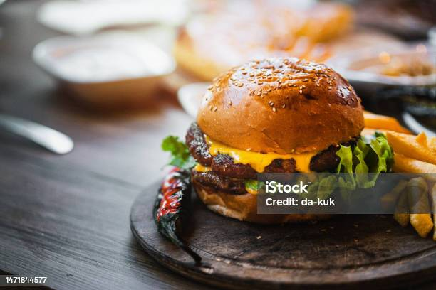

Cheeseburger

Description
Sink your teeth into a mouthwatering, juicy cheeseburger with a perfect balance of savory beef, melty cheese, fresh toppings, and a toasted bun. This homemade burger captures all the flavors of a diner-style classic but made right in your kitchen (or on the grill). Ideal for cookouts, weeknight dinners, or just satisfying that burger craving.
Ingredients
For the Patties (Serves 4)
- 1 lb (450g) ground beef (80/20 lean-to-fat ratio for juiciness)
- 1 tsp salt
- ½ tsp black pepper
- ½ tsp garlic powder (optional)
- ½ tsp onion powder (optional)
For Assembling
- 4 burger buns (brioche or sesame seed preferred)
- 4 slices of cheese (American, cheddar, or your favorite)
- 1 tomato, sliced
- 1 small red onion, thinly sliced
- Lettuce leaves
- Pickles (sliced)
- Ketchup, mustard, and/or mayo
- Butter for toasting buns
Instructions
- Form the Patties:
- Divide the ground beef into 4 equal portions (about 4 oz each).
- Gently form each into a patty about ¾ inch thick. Press a slight indentation in the center with your thumb to prevent puffing during cooking.
- Season both sides of the patties with salt, pepper, garlic powder, and onion powder if using.
- Preheat Your Cooking Surface:
- Heat a cast iron skillet, griddle, or grill over medium-high heat. Lightly oil if needed.
- Cook the Patties:
- Place patties on the hot surface and sear for 3–4 minutes on the first side (don’t press down!).
- Flip and cook another 2–3 minutes, then place a slice of cheese on each patty and cover with a lid or foil to help it melt.
- Cook to your preferred doneness (internal temp of 160°F / 71°C for well-done).
- Toast the Buns:
- While burgers cook, butter the cut sides of the buns and toast them in a skillet or on the grill until golden brown.
- Assemble the Burgers:
- Spread sauces of choice on the bottom bun.
- Add lettuce, then the cheesy patty.
- Top with tomato, onion, and pickles.
- Add more sauce to the top bun and close the burger.
Home